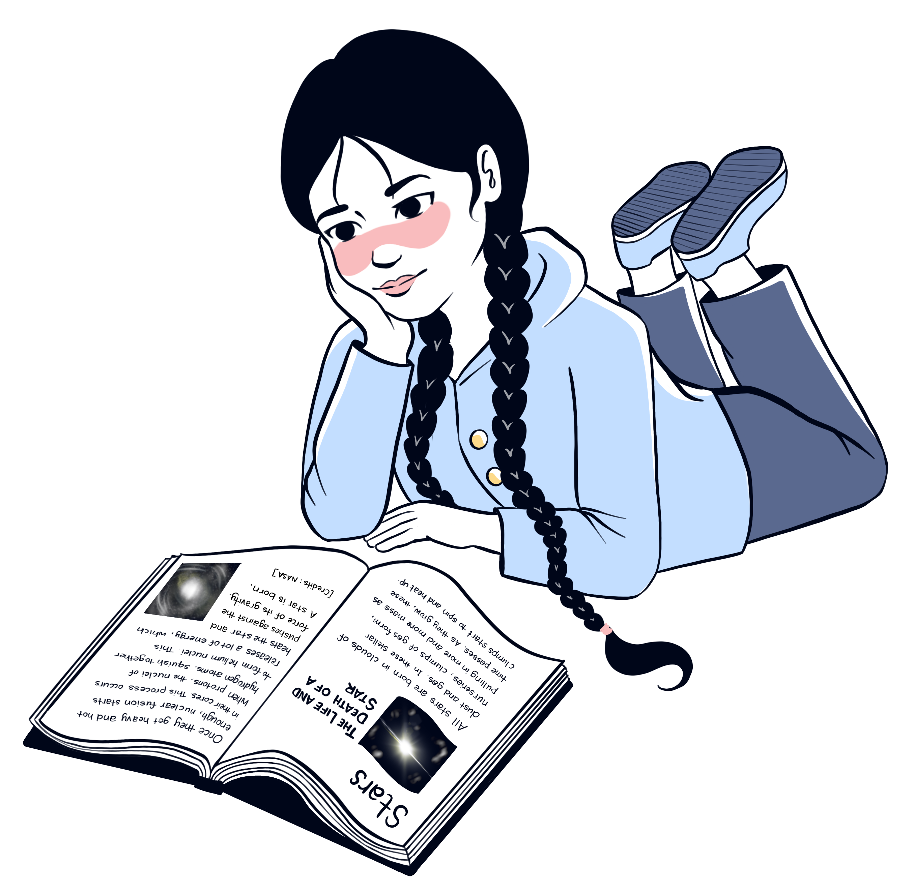

Hi, nice to meet you!

I'm Dhamar.
When I was 7, I'd look up at the stars and worry that someday, they’d get tired, fizz out, and crash to Earth.
Like any curious child, I asked my dad: “How can the stars stay up like that?”
Like any nonchalant adult, he replied: “That’s just what stars do.” But why?
I had two dangerous weapons for any 7-year-old: questions, and a library card.
From the bottom shelf of my local library’s encyclopedia section, I pulled out the volume titled ‘S’ and began my star search.
Stars have inward and outward pulls, in which the countering gravitational forces allow them to stay up in the sky. Massive stars become supernovas at the end of their lives and don't crash onto Earth!

That curiosity is still a big part of who I am. I love becoming invested in what I learn, and it fuels my passion for design and technology—and how people interact with the world around them. I hope each experience introduces me to questions I haven’t thought to ask yet.
Tools I use
Choose a tool to see a project where I use it.
Experience
-
June 2025 – Present
Social Media Marketer
Kinlia
-
January 2025 – Present
Associate Product Manager
Harvard Product Lab
-
September 2023 – Present
Director of Marketing and Strategy
WECode